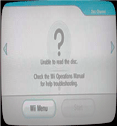

No power
The console will not turn on and the light will not be on either.The problem is normally with the motherboard or power cable. We will take a look at the hardware and determine what needs to be fixed. Repair comes with a 45 day warrenty it’s not a hardware replacement. If it’s a hardware replacement, 90 day warranty.
Disc read error

The console is not reading the disc. This may be caused by either by an overly damaged disk or the disk reader is damaged. We will take a look at the hardware and determine what needs to be fixed. Repair comes with a 45 day warrenty it’s not a hardware replacement. If it’s a hardware replacement, 90 day warranty.
Dvd drive failure
 The console is not accepting or ejecting discs. The problem could be from items jammed inside the Wii dvd drive. We will take a look at the hardware and determine what needs to be fixed. Repair comes with a 45 day warrenty it’s not a hardware replacement. If it’s a hardware replacement, 90 day warranty.
The console is not accepting or ejecting discs. The problem could be from items jammed inside the Wii dvd drive. We will take a look at the hardware and determine what needs to be fixed. Repair comes with a 45 day warrenty it’s not a hardware replacement. If it’s a hardware replacement, 90 day warranty.
For more help, go to Nintendo.com